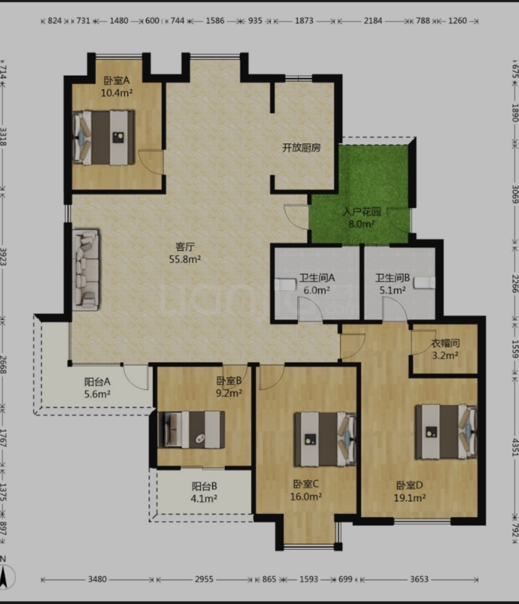

MORTGAGE
公积金贷款
- 贷款本金
- 年利率
- 年利率 2.6%
- 贷款期限
- 26 年 · 312 期
- 预计月供
- 全期利息
- 含利息总支出
贷款本金已包含在260万元购房款内，不重复计入总预算；这里只把全期利息作为融资成本增加。
更新于 2026.08
JIABAO GARDEN · HOME RECORD
165㎡四室两厅两卫的房屋档案，记录购房背景、户型资料与完整投入，方便后续继续补充实景照片和居住记录。
TOTAL OWNERSHIP BUDGET
购房成本与装修预算分开记录
当前总预算只包含已知购房款、中介费、契税和装修清单；贷款利息、登记费及其他未提供费用暂未计入。
MORTGAGE
贷款本金已包含在260万元购房款内，不重复计入总预算；这里只把全期利息作为融资成本增加。
PARKING
当前判断购买价格虚高，暂时租用他人车位。租售比未考虑租金上涨、车位升值、管理费与资金机会成本。

HOUSE PROFILE
施教区、入学条件与政策以教育部门当年公布为准。
RENOVATION LEDGER · 113 ITEMS
按硬装、家具软装、家电智能和待购状态记录。附加安装费用全部计入，金额与占比由清单实时汇总。
165㎡建筑面积；封窗单独按约52㎡计算
房屋单价按 165㎡建筑面积计算；封窗主体单价按约 52㎡窗体面积计算。城市、年份、品牌与施工条件都会影响横向比较。
按原始用途拆分；待购状态可以跨分类
基于这份清单本身，而不是通用行业评分
共 7 组，点击分类展开查看
HOME BUYING DECISION · THREE-STAGE FUNNEL
这 7 套并不是初次海选，而是看过大量房源、经过三轮筛选后的候选。评分用来对齐理性条件，家属感受、缺点能否解决和真实谈价决定最终结果。
FINAL CHOICE
先筛选，再评分，最后做现实校验
专业的选房不是只做一张分数表：硬伤和家庭否决项需要单独记录，不能被低价或某个高分项完全抵消。
任何房子都可以套用，再替换成自己的个人偏好权重
每个维度先按0–10分评价，所有权重合计100%。先固定评分规则，再比较房源，可以减少“看完后才临时改标准”的偏差。
下方候选卡的每一分都可回算
当时总分 = 交通＋户型＋周边＋小区＋教育＋房龄＋梯户＋车位＋价格＋特殊修正。价格项以450万元为个人基准，每低10万元增加1分；终选阶段将房价换成税费、装修、车位等全周期成本。
共7套 · 按当时得分从高到低排列
原始得分是当时家庭偏好的快照，不是通用房产排名。高分房源仍可能因为价格权重、家属感受或交易条件退出，因此每张卡片都单独记录“未选择原因”或最终验证结论。
进入谈价阶段的两套房源
成交 ¥2,600,000
报价从 ¥2,950,000 跳至 ¥3,150,000
结合两轮记录后的结论
初筛中瀚河苑和水榭五期同为63分，但评分依赖当时挂牌价和主观权重。进入实际谈价后，房屋总成本、可用空间和家庭长期需求比单一分数更重要。
相比水榭1楼，嘉宝多约31㎡建筑面积、22㎡实用面积，三南一北更符合家庭房间分配；11楼也避开了一楼潮湿、隐私和花园维护成本。
低密度、花园和独立车库很稀缺，但卖方从295万元直接改报315万元，交易条件失去继续谈判的基础。最终嘉宝以260万元成交，且经12楼实地验证后确认系统窗能解决主要噪声问题。
施教区参考：苏州市教育局公开的2026年吴中区小学、初中施教区、2023年吴中区中小学施教区、2024年姑苏区小学施教区及2024年直属学校施教区。实际入学以当年教育部门公布为准。